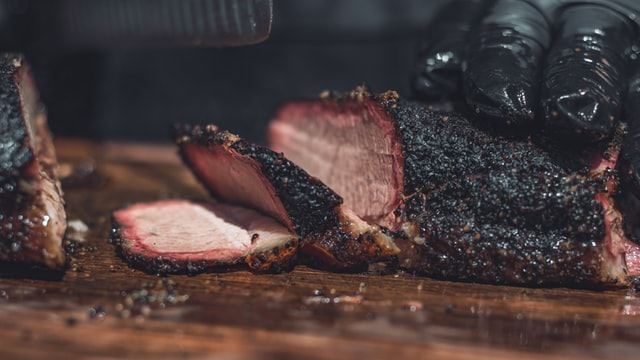

Brisket

Description
Coming from the "pecs" or chest of the cow, brisket is this tough and stringy slab of muscle. When cooked properly, it turns into this succulent, soft, and (boy oh boy!) mouth-watering dish that is worth dying for. The best place to get delicious brisket is Texas' many BBQ joints. But if you want to try it at home, you can too.
Ingredients
These are what you need:
- Brisket (packer whole cut, leaner flat, or fattier point)
- Dalmatian rub (essentially salt and pepper)
- Lump charcoal or charcoal briquettes for fuel
- Wood of choice for smokey flavour (oak, mesquite, maple, etc.)
- Time
- A couple of cold ones
Steps
Here is how you do it:
- Trim some of the fat off the brisket.
- Apply the rub onto the brisket to season.
- Get your BBQ/smoker ready. The ideal temperature is around 250F. Don't forget to throw in the wood for flavour.
- Smoke the brisket until its internal temperature reaches 165F.
- Remove the brisket and wrap it with butcher paper or foil.
- Put the wrapped brisket back into the smoker. Continue cooking until the internal temperature hits 200F.
- Take the brisket out. Remove the wrap. Let the meat rest for 30 minute. DO NOT SKIP THIS STEP.
- Slice and serve.
Note: This is a simple version of this recipe. For more details, please go here.
Back to the homepage